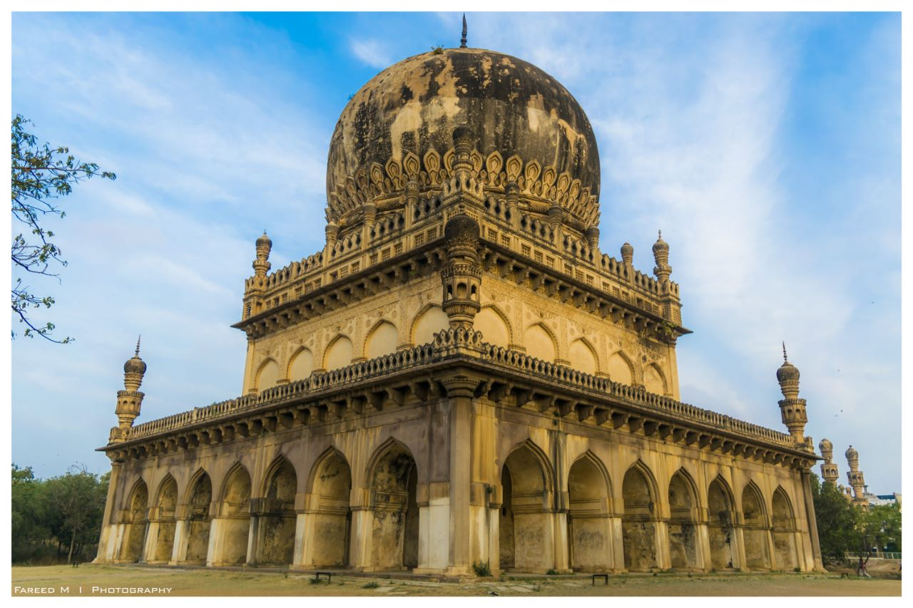

QUTUB SHAH TOMBS

The Qutub Shahi Tombs are located in the Ibrahim Bagh (garden precinct), close to the famous Golconda Fort in Hyderabad, India. They contain the tombs and mosques built by the various kings of the Qutub Shahi dynasty.
The galleries of the smaller tombs are of a single storey while the larger ones are two storied. In the centre of each tomb is a sarcophagus which overlies the actual burial vault in a crypt below.
The domes were originally overlaid with blue and green tiles, of which only a few pieces now remain.
The complex was put by UNESCO on its "tentative list" to become a World Heritage Site in 2014, with others in the region, under the name Monuments and Forts of the Deccan Sultanate (despite there being a number of different sultanates).
How to reach:

By Air
The nearest airport is in hyderabad

By Train
The nearest railways is in hyderabad

By Road
qutub shahi tombs, the most famous tourist destination in Hyderabad, can be used as a landmark. A bus,cab,local rickshaw can also be taken to reach the capital.